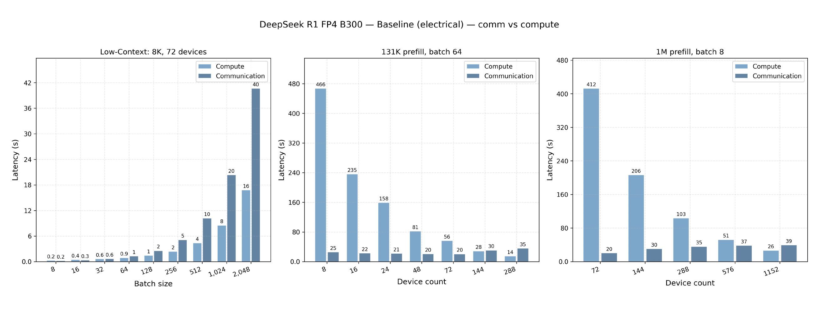
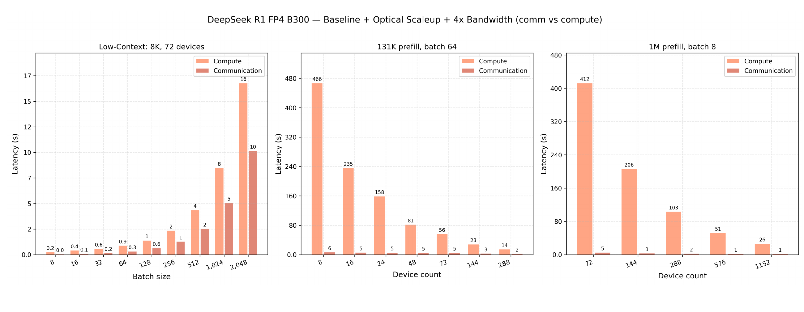
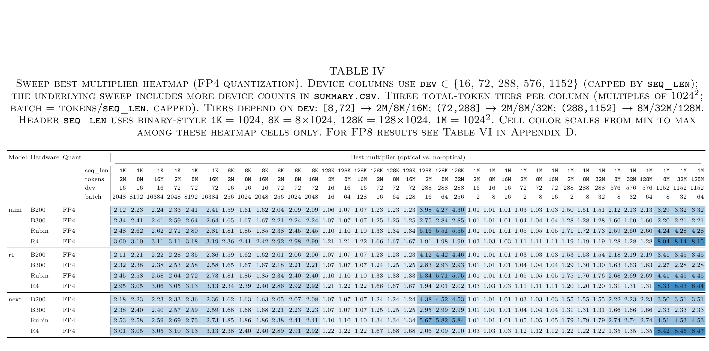
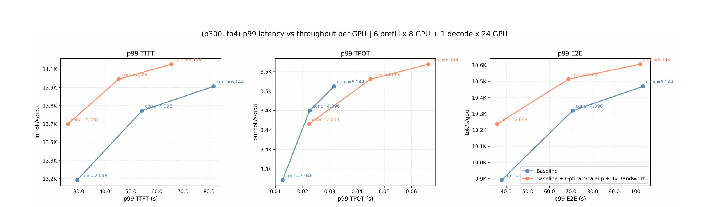

Scaling Inference Prefill with High-Radix Photonic Interconnects
作者主張 當長上下文 Mixture-of-Experts（MoE）prefill 為降低首 token 延遲而跨出單 rack，較慢的 scale-out fabric 會抵銷新增 GPU 的計算收益；把高頻寬 scale-up domain 擴到 1,152 GPU，才是 3D 光互連的主要價值。
實驗事實 在建模的 B300、FP4、42B-active R1 變體上，128K context 從 72 擴到 288 GPU 時，電氣 baseline 的通訊時間升至 35.5 秒，光互連情境則為 2.3 秒；但 serving 模擬也顯示 p99 TTFT 改善 12–20% 的同時，單一 decode worker 的 p99 TPOT 惡化 77–110%。§V-B · PDF p.5§V-E · PDF pp.9–10 · Fig. 7
分析 這是一篇有價值的 interconnect sensitivity study，而不是實機產品 benchmark：其最強洞見是「擴大 scale-up 邊界」與「增加 bandwidth」必須一起看；其最重要邊界則是所有主要倍數來自成本模型與投影規格。
文章目錄
為什麼 prefill 會把「算得更快」變成「網路更慢」？
理解這篇論文的第一個障礙，是把「LLM inference」拆成資源性質完全不同的兩段。預填充（prefill）一次處理整段輸入、建立 Key–Value cache（KV cache），以密集矩陣乘法為主，使用者感受到的是首 token 時間（Time to First Token, TTFT）；解碼（decode）則逐 token 讀取模型權重與 KV cache，通常受 High Bandwidth Memory（HBM）頻寬限制，關鍵指標是每輸出 token 時間（Time per Output Token, TPOT）。本研究只把光互連直接套在 prefill 側，所以後面必須另外檢查 decode 是否接得住更快抵達的請求。§II-A · PDF p.2
| 必要概念 | 在本文中的具體作用 | 後面要觀察的量 |
|---|---|---|
| Batching | 較大 batch 能提高 GPU compute utilization，卻同步放大 activation tensor 與 collective traffic。 | prefill latency、input-token throughput |
| MoE 三維平行化 | \(x\) 軸做 sequence/context parallel；\(y\) 軸同時承擔 expert 與 tensor parallel、最吃頻寬；\(z\) 軸切分 dense／expert FFW hidden dimension。 | mesh shape、All-to-All、All-Gather、Reduce-Scatter 成本 |
| Scale-up pod | 單一高頻寬一致性 domain；電氣 baseline 最多 72 GPU（R4 投影為 576），超過後落到較慢的 cross-rack scale-out。 | SU/SO bandwidth、跨 pod 的 latency inflection |
| Compute–communication overlap | 計算與通訊可以部分重疊，因此總時間不是簡單相加；只有落在 critical path 的部分會決定 prefill latency。 | overlapped prefill latency |
分析 這四個概念形成同一條因果鏈：batch 或 context 增加資料量，平行化把資料量轉成 collective，device count 決定 collective 是否跨出 scale-up pod，最後 overlap 決定通訊是否真的進入關鍵路徑。若只看「光鏈路是 4× bandwidth」，就會漏掉本文最重要的 radix／pod-boundary 效應。§I · PDF pp.1–2Appendix B · PDF p.12
還要區分兩種 workload。1K–8K context 配上極大 batch，主要把單 GPU 計算變快後暴露的通訊推上 critical path；128K–1M context 則需要更多 GPU 壓低 TTFT，主要撞上跨 rack 後 bandwidth domain 改變。後面的結果不能把這兩種收益來源混成一個通用倍率。§V · PDF p.5
銅線的 rack 邊界如何吞掉跨 GPU 擴展收益？
這一章要回答的不是「光纖是否比銅線快」，而是為什麼在 prefill 增加 GPU，可能先把計算時間降下來，卻又讓通訊時間變成新的牆。作者把根因落在電氣 I/O 的 shoreline、reach 與 energy 三角限制：HBM 已占用封裝周界，高速 SerDes 可用的邊緣有限；被動銅線在 224 Gb/s 約只能走 1 公尺，若再加 retimer，就會消耗原本可給計算的電力。結果是高頻寬 scale-up pod 被限制在單 rack，而多 rack 必須經過每 GPU bandwidth 更低的 scale-out fabric。§II-C · PDF pp.2–3
| 本文引用的 link 特性 | 被動銅線 | 3D 整合光互連 | 系統含義 |
|---|---|---|---|
| Reach | 約 1 m（224G） | 1,000 m | 光互連可把 scale-up domain 延伸到跨 rack。 |
| Port pitch | 1,020 µm | 127 µm 雙向光纖 | 較密的 I/O 允許更高 radix。 |
| 每線資料率 | 0.224 Tb/s／差動對 | 1.79 Tb/s／fiber（16 wavelengths） | 同一封裝邊界可承載更多 aggregate bandwidth。 |
| Link energy | 約 5 pJ/bit | 約 4.3 pJ/bit | 投影上沒有以數倍能耗交換 reach；但未納入完整系統冷卻與 TCO。 |
作者主張 3D stacking 把 electronic integrated circuit／host ASIC 疊在 photonic integrated circuit 上，讓 I/O 不再只沿封裝 shoreline 排列；波分多工與較細的 fiber 使每 GPU 雙向頻寬可超過 64 Tb/s，並把 pod radix 推到 1,152。本文把這些數值當成建模依據，而非直接模擬 Lightmatter Passage 產品。§III-A · PDF p.3 · Table I
最近的電氣系統並非完全沒有跨 rack 能力；問題在於跨界後每 GPU 的通訊服務率突然下降。本文的 B200、B300 與 Rubin baseline 都以 72 GPU 為最大 electrical scale-up pod，SU bandwidth 分別為 900、900、1,800 GB/s，而跨 rack SO bandwidth 只有 50、100、100 GB/s。R4 是例外：作者依 roadmap 報告推測 576-GPU hybrid pod，但仍在 1,152 GPU 情境跨界。§IV-C · PDF p.4 · Table III
本文真正比較的是兩個綁在一起的 intervention：每 GPU scale-up bandwidth 提高 4×，同時最大 scale-up pod 從 72／576 擴到 1,152 GPU。這能回答「完整光 scale-up 情境是否有價值」，卻不能單獨歸因多少收益來自 bandwidth、多少來自避免 scale-out 邊界。
從問題可推導三個判準：第一，必須固定每 GPU compute 與 HBM，才能隔離互連；第二，既要掃 batch，也要掃 device count，因為兩者分別放大 traffic 與改變 pod crossing；第三，不能只看 prefill microbenchmark，還要讓 decode 出現在端到端 serving 路徑中。作者前兩項做得完整，第三項以單一配置的 discrete-event simulation（DES）補上，但仍留下容量共同設計問題。§IV-C–E · PDF pp.4–5§V-E · PDF pp.9–10
真正的槓桿不是只把鏈路加速，而是把 scale-up 邊界推到 1,152 GPU
最小可用的心智模型，是把一次 prefill 想成兩條可重疊的時間線：一條做矩陣計算，一條搬運 collective activation。增加 GPU 會縮短前者；若新 GPU 還在同一個 scale-up pod，後者也可能維持可控。但一旦跨出 pod，collective 被送上較慢的 scale-out，通訊時間可能反而跳升。這個比喻只描述 critical-path 直覺；真實 XLA graph 還有多個 collective、mesh 維度與不完全 overlap，不能把總 latency 一律寫成兩者的最大值。
一個 8K、batch 2,048 的「算得越快，網路越顯眼」例子
實驗事實 在 72 張 B300、FP4、R1 變體的 8K-token prefill 中，電氣 baseline 的 compute component 約 16.8 秒，communication component 約 40.6 秒。matched optical 情境不改 compute，communication 降到約 10.2 秒。也就是說，4× bandwidth 不是平均把所有時間除以四，而是把原本支配 critical path 的通訊拉回計算附近。§V-A · PDF p.5 · Figs. 1–2
一個 128K、batch 64 的「GPU 加到 288 卻撞牆」例子
在 72 GPU 時，compute 約 56.1 秒、communication 約 20.3 秒，還是 compute-bound。把 device count 拉到 288 後，compute 降到 14.3 秒；可是 72-GPU electrical pod 已跨界，communication 升到 35.5 秒。光互連情境把 288 GPU 留在同一個高頻寬 scale-up domain，communication 僅 2.3 秒，於是加 GPU 的計算收益能真正留在端到端 prefill latency 上。§V-B · PDF p.5 · Figs. 1–2
本文以同一配置的 overlapped latency 比值表示光互連收益：
\[ G = \frac{L_{\mathrm{electrical}}^{\mathrm{overlap}}}{L_{\mathrm{optical}}^{\mathrm{overlap}}} \]\(G>1\) 代表 modeled optical configuration 較快；\(L^{\mathrm{overlap}}\) 是 XLA cost walk 納入 compute–communication overlap 後的 prefill latency。表格中的 \(G\) 不是固定 operating point 的平均，而是每個 device sweep 或 batch sweep 中的最大比值。
分析 因此讀 Table IV 時要同時問兩件事：該 cell 是否已跨越 baseline pod，以及它是否是 sweep 中最有利的點。這也解釋為什麼某些 compute-bound cell 只有約 1.01×，而 1M／1,152-GPU 的 R4 projection 可超過 8×；差別主要是 critical path 與 pod boundary，不是模型名稱本身。§V-D · PDF pp.8–9 · Table IV
作者如何把模型、平行化網格與互連成本放進同一個比較？
方法章的理解障礙，是這篇 paper 沒有實作一套 photonic serving system；它建的是一條模型與硬體成本推演管線。因此每個結果都必須追問：輸入規格是什麼、哪些量固定、哪些量同時被改變，以及最後顯示的是原始 latency 還是 sweep 中的最佳倍率。
MoE model + TP / EP / CP partition
GPU platform + physical mesh
context length / batch / device count
electrical or optical interconnect profile
↓
modified XLA walks MLIR operations
↓
compute cost + generated collective communication cost
↓
compute–communication overlap model
↓
prefill latency, input-token throughput, electrical/optical ratio
↓
DES propagates prefill service time into TTFT / TPOT / E2E latency步驟一：用 production-like partition 產生通訊，而不是手填 traffic volume
作者主張 作者以 Multi-Level Intermediate Representation（MLIR）表示 Tensor Parallelism（TP）、Expert Parallelism（EP）與 Context／Sequence Parallelism（CP／SP），再由修改版 Accelerated Linear Algebra（XLA）compiler 產生 collective calls，走訪圖中的 compute 與 communication cost。這個設計的優點是 mesh 與模型 partition 會自然決定 All-to-All、All-Gather、Reduce-Scatter 等通信，而不是先假設一個平均 network utilization。§IV-A · PDF pp.3–4
Appendix B 的 mesh 把頻寬最重的 expert routing 與 attention head partition 放在 \(y\) 軸；公開的 Table V 則讓 device count 從 8 到 1,152 時，prefill mesh 由 \(1\times8\times1\) 擴成 \(16\times72\times1\)。這等於先把 72-device 的 bandwidth-heavy group 固定，再用 \(x\) 軸跨 rack 增加 context parallelism。Appendix B · PDF p.12 · Table V
步驟二：同時覆蓋模型規模、precision 與 platform
| 模型 proxy | Layers／experts／heads | 總參數／active 參數 | 可解讀邊界 |
|---|---|---|---|
| Mini | 30／144／144 | 190B／21B | 小型 MoE tier，不對應具名 production checkpoint。 |
| R1 | 61／288／144 | 840B／42B | 為 mesh divisibility 修改 DeepSeek-R1；總參數約大 14%。 |
| Next | 120／1,152／288 | 13T／201B | 未來大型 MoE proxy，不是已部署模型。 |
三者皆採 Multi-Head Latent Attention（MLA），並以 FP4 與 FP8 估算。主文 Figures 1–7 多以 R1、B300、FP4 為代表；Table IV／VI 才跨三模型、四平台與兩種 precision。§IV-B · PDF p.4 · Table IIAppendix C–D · PDF p.13 · Table VI
| Electrical baseline | FP8／FP4 dense PFLOPS | Max SU GPU | SU／SO bandwidth（GB/s/GPU） | HBM bandwidth／capacity |
|---|---|---|---|---|
| B200 | 4.5／9 | 72 | 900／50 | 7.67 TB/s／192 GB |
| B300 | 7／14 | 72 | 900／100 | 7.94 TB/s／288 GB |
| Rubin（roadmap） | 17.5／25 | 72 | 1,800／100 | 22 TB/s／288 GB |
| R4（推測規格） | 35／50 | 576 | 1,800／100 | 53 TB/s／288 GB |
每個 optical counterpart 都保留同一列的 compute 與 HBM，只把 per-GPU SU bandwidth 設成 4×，並把 maximum SU pod 設成 1,152 GPU。這個 matched-pair 設計隔離了「計算／記憶體世代」差異，但 optical intervention 仍同時包含 bandwidth 與 radix。§IV-C · PDF p.4 · Table III
步驟三：用兩種 sweep 分開撞擊 traffic volume 與 pod boundary
| Sweep | 固定量 | 掃描量 | 主要回答的問題 |
|---|---|---|---|
| Device sweep | 1K／8K／128K／1M context 的 batch 分別為 8,192／1,024／64／8，總輸入約 8M tokens | 通常 8–72、最高 1,152 GPU | 加 GPU 時何處跨出 electrical SU pod？ |
| Batch sweep | 四種 context 的 device count 分別為 16／72／288／1,152 | batch size | 更高 concurrency 何時讓 activation traffic 壓過 compute？ |
每個 configuration 先求 overlapped prefill latency，再於 device 或 batch sweep 中取最大的 \(G\)。因此 heatmap 是best-case sensitivity envelope，而不是 production request distribution 的 expectation。§IV-D–E · PDF pp.4–5
步驟四：把 prefill service time 放回 72-GPU serving pipeline
為避免只用離線超大 batch，作者另做 DES：六個 8-GPU prefill workers、單一 24-GPU decode worker；B300 FP4、R1、ISL 8,192、OSL 1,024、Poisson arrival rate 250 req/s，maximum prefill batch 64，in-flight concurrency 為 2,048／4,096／6,144。這個配置刻意讓 decode 飽和，用來觀察 prefill 加速會不會只是把排隊壓力移到下一站。§V-E · PDF pp.9–10 · Fig. 7
分析 方法的可重現性仍缺兩塊：論文未公開完整 cost equations、overlap scheduler 與模型校準誤差；Appendix B 文字說 288-device R1 的 preferred mesh 是 \(2\times144\times1\)，Table V 卻列 \(4\times72\times1\)。這些差異不會抹去 pod-boundary 的定性洞見，但會影響精確倍率是否可重算。Appendix B · PDF p.12 · Table V
哪些 workload 真正受益，哪些只是把瓶頸推向 decode？
證據章的核心問題是：光互連在哪些 operating regimes 改變 critical path，在哪些情況只把瓶頸往後推？ 以下每一單元都把 claim、測試、觀察與 caveat 放在一起；所有倍數均為模擬或分析模型輸出，不是 photonic hardware measurement。
主張一：短 context 也可能 network-bound，但只在高 batch 壓力下
測試。 R1、B300、FP4；1K／8K context，分別做 device 與 batch sweeps。
實驗事實 8K、72 GPU、batch 2,048 時，electrical compute／communication 約為 16.8／40.6 秒；optical compute 不變、communication 約 10.2 秒。device sweep 的最佳 modeled latency ratio 在 1K 為 2.58×、8K 為 2.21×。§V-A · PDF pp.5–7 · Figs. 1–4
可支持結論。 高 concurrency 會讓 collective activation volume 把短 context prefill 推入 communication-bound。
限制。 bulk sweep 的 batch 可達 16,384，較接近 prompt-cache warming／document indexing，而非一般互動 chat；不能把 2.58× 當成常態線上收益。


主張二：128K 的最大收益來自避免 72→288 GPU 的 pod crossing
測試。 同一 R1/B300/FP4，context 128K、batch 64，比較 72 與 288 GPU 的 component time；再跨平台查 Table IV。
實驗事實 72 GPU 時 compute／communication 為 56.1／20.3 秒；擴到 288 GPU，compute 降至 14.3 秒，但 electrical communication 升到 35.5 秒。optical 288-GPU communication 僅 2.3 秒。B300 最佳 ratio 約 2.93×；B200 約 4.42×、Rubin 約 5.71×，R4 因原生 576-GPU pod 已涵蓋此範圍，只約 2.01×。§V-B · PDF pp.5–7 · Figs. 1–2, 5§V-D · PDF p.9 · Table IV
可支持結論。 只加 compute 不足以降低 TTFT；如果新 GPU 落到較慢的 scale-out domain，communication 會吃掉 parallel speedup。
限制。 光互連同時增加 4× SU bandwidth 與 1,152-GPU radix，這個實驗沒有 bandwidth-only／radix-only ablation。
主張三：1M context 需要 1,152-GPU scale-up domain，卻最依賴投影假設
測試。 R1/B300/FP4、batch 8，device count 掃至 1,152；另在 Table IV 比較四種 platform。
實驗事實 1,152 GPU 時 compute 約 26.2 秒；electrical communication 約 39.2 秒、optical 約 1.6 秒，作者報 overlapped latency 27.5 秒與約 2.3× total speedup。最佳 device-sweep ratio 在 B300 約 2.27×，B200／Rubin 約 3.4–4.5×，R4 因 1,152 超出其 576-GPU pod而超過 8×。§V-C · PDF pp.6–8 · Figs. 1–2, 6§V-D · PDF p.9 · Table IV
可支持結論。 在模型內，長 context 的最佳 GPU footprint 若超過 native pod，large-radix optical scale-up 能移除 abrupt scale-out penalty。
限制。 1,152-GPU optical pod、R4 與部分 Rubin 規格都是 projection；沒有實體 topology、switch、congestion、failure 或 link-latency 模型。

主張四：線上 small-batch 的 TTFT 變好，但 decode 會吸收大部分端到端收益
測試。 72-GPU DES；六個 8-GPU prefill workers 與一個 24-GPU decode worker，Poisson \(\lambda=250\) req/s、ISL 8,192、OSL 1,024，觀察三種 in-flight concurrency 的 p99。
實驗事實 p99 TTFT 改善 12–20%：concurrency 2,048 為 29.4→25.8 秒，6,144 為 81.8→65.5 秒。可是 6,144 時 decode batch 約 694→734，p99 TPOT 31.6→66.3 ms，增幅約 110%；該點的 p99 E2E 只由 103.4→102.0 秒。作者把三種 concurrency 概括為約 1–5% E2E 改善，input/output throughput 也各只提高約 1–4%；Figure 7 的低 concurrency 視覺讀值與這個概括仍有待原始數據釐清。§V-E · PDF pp.9–10 · Fig. 7
可支持結論。 optical prefill 是 TTFT 與 input-throughput lever；若 decode capacity 不共同擴充，較快完成的 prefill 只會讓 decode queue 更密集。
限制。 作者刻意只放一個飽和 decode worker，且只測一組模型、ISL／OSL、arrival process 與 platform；這是 bottleneck demonstration，不是一般 production sizing rule。

分析 四組證據共同支持一個較窄但更可靠的結論：當 collective communication 已落在 overlapped critical path，或 device footprint 正好跨越低頻寬 scale-out 邊界時，大 bandwidth／radix 的 optical scale-up 很有潛力；它不保證所有 context、batch 或完整 serving latency 都得到同一倍率。§VII–IX · PDF p.10
這些倍數能否直接當成採購或容量規劃結論？
批判性閱讀最容易犯的錯，是把這篇 paper 的 modeled multiplier 當成「換成光互連就會得到的實機 speedup」。比較準確的定位是：作者建立了一組跨度很大的 sensitivity study，清楚顯示什麼條件會讓 interconnect 進入 prefill critical path；但它還沒有把這個因果故事在實體 optical cluster 上閉環。
| 評估面向 | 做得好的地方 | 尚不能支持的結論 |
|---|---|---|
| 控制變因 | optical pair 保留同一 GPU compute 與 HBM；跨三模型、四平台、FP4/FP8。 | bandwidth 與 radix 同時改變，無法拆出各自 causal contribution。 |
| 操作區間 | 同時掃 device、batch、context，能看到 compute-bound 與 pod-crossing 的轉折。 | 每格取最大 ratio；不能代表平均 request 或固定 production operating point。 |
| Serving 視角 | DES 主動暴露 decode bottleneck，避免只報漂亮的 prefill speedup。 | 單一 B300/R1/ISL/OSL/Poisson workload，不能推廣到 bursty、多模型或多 decode 配置。 |
| 硬體可信度 | 清楚列出 electrical baseline 與 optical 假設。 | 沒有 photonic prototype、實體 topology、congestion、failure、thermal、signal-integrity 或 TCO 驗證。 |
| 可重現性 | R1 config 與主要 mesh 表格公開在 appendix。 | 論文未提供 XLA fork/commit、cost equations、校準誤差、DES code、random seed、run length 或原始 summary.csv。 |
最重要的因果混淆：光只是實現方式，模型真正獎勵的是 bandwidth 與 radix
分析 當結果超過 4×，不能解讀為「photonics 本身超過 4×」；這通常是因為 electrical baseline 已掉到 50／100 GB/s scale-out，而 optical case 仍留在 4× SU bandwidth 的 1,152-GPU domain。理論上，任何能提供相同 per-GPU bandwidth、radix 與 latency 的互連都會在這個模型裡得到相近結果。要證明 photonics 是最佳工程路徑，還需要能耗、成本、可靠性與 packaging 的同條件比較。§IV-C · PDF p.4§V-D · PDF pp.8–9 · Table IV
DES 是必要的反例，但還不是獨立驗證
分析 DES 仍以同一套 cost model 與理想 optical profile 產生 service time，沒有用 B300 cluster 或 photonic link 的 measured distribution 校準。論文也未提供 simulation duration、warm-up、樣本數、seed、重複次數或 confidence interval；因此 p99 的小幅差異不宜被解讀得比 12–20% TTFT 與 77–110% TPOT 的方向性 trade-off 更精確。§V-E & Appendix E · PDF pp.9–10, 14
Figure 7 的低 concurrency p99 E2E datapoint 視覺上似乎沒有落在作者概括的「約 1–5% 改善」範圍內；原始數據未公開，所以無法確認是視覺讀值、文字概括範圍或圖表標示問題。較安全的結論是：在提供明確數字的 concurrency 6,144 下，103.4→102.0 秒近乎中性；其餘點不宣稱一致改善。§V-E · PDF pp.9–10 · Fig. 7
三個內部一致性問題會影響重現與傳播
- Mesh。 Appendix B 文字稱 288-device preferred mesh 為 \(2\times144\times1\)，緊接的 Table V 卻列 \(4\times72\times1\)；\(y\) 又是最吃 bandwidth 的軸，差異並非純排版。
- Energy 表格。 Table I 從 5 降到 4.3 pJ/bit，約是 14% reduction 或 0.86×，但 improvement 欄寫 0.13×，單位／算法有歧義。
- 摘要式倍率。 主文細分 B300 128K 約 2.8–3.0×、B200/Rubin 約 4.3–5.8×；結論卻把 B200、B300、Rubin 一起概括為 4.3–5.8×。應以 Figures 1–6 與 Table IV 的配置值為準。
分析 這些不一致不推翻「crossing scale-up boundary 會放大 network penalty」的定性結果，卻提醒讀者不要只引用 abstract／conclusion 的最大倍數。§III-A · PDF p.3 · Table IAppendix B · PDF p.12 · Table V
證據來源與外部效度
四位作者皆隸屬 Lightmatter，3D optical bandwidth／radix／energy 的依據也包含該公司的 Passage 資料與作者先前工作。論文有揭露並說明未直接模擬特定 vendor product；這不等同結果錯誤，但應把它描述為vendor-authored modeled evidence，等待第三方實機驗證。R4 是 speculative roadmap configuration，亦不應與 B200/B300 的現存產品等量齊觀。§III-A · PDF p.3§VII · PDF p.10
論文本身把適用範圍收斂為 communication-limited、prefill-heavy regimes，並承認在 decode saturation 下，TTFT headroom 不會自動轉換成完整 serving throughput 或 E2E latency。§VII–IX · PDF p.10
下一步要如何把光互連變成完整 serving 系統收益？
下一步真正有價值的工作，不是再把同一個 best-case heatmap 做得更大，而是把「optical link → collective → prefill queue → decode queue → 使用者 SLO」的證據鏈逐段量測並拆因果。
| 後續實驗 | 最小對照設計 | 可回答的問題 |
|---|---|---|
| Bandwidth × radix 2×2 ablation | 固定 topology 分別只增加 bandwidth、只擴 pod、兩者皆做、兩者皆不做 | 收益究竟來自快鏈路，還是避免 scale-out boundary？ |
| 實機 microbenchmark 與模型校準 | 同一 collective library 在 electrical／photonic prototype 上量 All-to-All、All-Gather、Reduce-Scatter distribution | XLA cost walk 的 bias、tail 與 overlap 假設多準？ |
| Prefill/decode 容量 sweep | 固定總 GPU，掃 prefill:decode 比例、不同 OSL 與 decode batch cap | TTFT gain 何時能轉成 TPOT、E2E 與 goodput？ |
| Production-trace replay | heavy-tailed ISL/OSL、bursty arrival、prefix hit、multi-turn、MoE expert skew | Poisson／固定長度之外，pod crossing 是否仍是主因？ |
| TCO／可靠度共同最佳化 | 納入 switch stages、laser/thermal、fiber routing、repair、failure-domain、power 與 cooling | 同 SLO 下，每 token 成本與可用度是否勝過高階 electrical/multi-rail fabric？ |
推測 若 optical scale-up 能與 topology-aware collective placement 聯動，系統不一定要讓所有 1,152 GPU 永久形成一個扁平 domain；可以依 request 的 context、expert set 與 failure state 動態組出「足以不跨慢鏈路」的子 pod。這可能降低全域 switch radix 與故障 blast radius，但論文沒有建模 reconfiguration latency 或 control-plane complexity。§VIII · PDF p.10
推測 對 disaggregated inference 而言，下一個網路瓶頸可能從 prefill collective 轉為 KV-cache transfer。光互連若同時承載 P/D transfer、prefix sharing 與 decode memory traffic，是否仍有 4× 可用 bandwidth，必須用混合 traffic 與 congestion isolation 重新驗證；不能把本文的 prefill-only ratio直接套用。§VIII · PDF p.10
研究討論題
- 在相同 1,152-GPU logical domain 下，4× bandwidth 與消除 50／100 GB/s scale-out penalty 各貢獻多少？
- 若把總 72 GPU 從 48:24 改成更多 decode capacity，TTFT、TPOT、E2E 與 goodput 的 Pareto frontier 如何移動？
- 真實 MoE routing skew 是否會讓 \(y\) 軸 All-to-All 比 cost model 更易形成 congestion hot spot？
- 光互連的故障、reconfiguration 與維修粒度，會不會抵銷大 pod 的 latency 優勢？
- 對 AMD Instinct／Infinity Fabric 與 scale-out RDMA 架構，應如何建立同樣的 compute/SU/SO ratio 與 pod-boundary sensitivity map？
如何查回模型、硬體假設與關鍵證據？
| 正式題名 | Scaling Inference Prefill with High-Radix Photonic Interconnects |
|---|---|
| 作者 | Arulselvan Madhavan、Peter Carson、Taylor Groves、Thomas Graham |
| 發表狀態 | Accepted at the 33rd IEEE Symposium on High-Performance Interconnects（HotI 2026）；arXiv v1 submitted 2026-09-01 UTC |
| 識別碼 | arXiv:2609.01821；related DOI 10.1109/HotI70696.2026.00020 |
| 分類 | AI Infrastructure / Cluster Networking |
| 篇幅 | 共 14 頁 |
分析 分類依據是論文的主要 intervention 位於 GPU cluster 的 scale-up／scale-out fabric、bandwidth、radix 與跨 rack topology boundary，而非單一模型演算法或 serving scheduler；因此歸入 AI Infrastructure / Cluster Networking。Abstract & §I · PDF pp.1–2
詞彙表
| 詞彙 | 本文語境 |
|---|---|
| Prefill | 並行處理輸入 tokens、建立 KV cache 的 inference 階段；主要以 TTFT 衡量。 |
| Decode | 逐 token 生成階段；主要受 HBM bandwidth 影響，以 TPOT 衡量。 |
| Scale-up（SU） | 高頻寬、緊密耦合的 GPU domain；本文比較其 per-GPU bandwidth 與最大 pod size。 |
| Scale-out（SO） | 跨 rack 擴展 fabric；baseline 在超出 SU pod 後使用較低 per-GPU bandwidth。 |
| Radix | 互連可直接連接的 endpoint／port 規模；本文以 1,152-GPU optical pod 代表高 radix。 |
| MLA | Multi-Head Latent Attention；三個 MoE proxy 都採用，以低秩表示降低 KV-cache footprint。 |
| DES | Discrete-Event Simulation；把 modeled prefill/decode service time帶入 queueing 流程。 |
| Overlapped latency | XLA cost walk 納入 compute–communication overlap 後的 prefill latency；完整計算規則論文未提供。 |
關鍵證據索引
- 研究問題與總體主張：Abstract／§I，PDF pp.1–2。
- Prefill、decode、TTFT、TPOT：§II-A，PDF p.2。
- Shoreline、reach 與 rack 限制：§II-C，PDF pp.2–3。
- 3D photonics 的 bandwidth、radix、energy 假設：§III-A，PDF p.3，Table I。
- MLIR／XLA cost-walk 方法：§IV-A，PDF pp.3–4。
- Mini／R1／Next 模型：§IV-B，PDF p.4，Table II。
- Electrical 與 matched optical platform：§IV-C，PDF p.4，Table III。
- 控制變因與整體方法：§IV-A–E，PDF pp.3–5。
- Device／batch sweep 與最大倍率定義：§IV-D–E，PDF pp.4–5。
- 四種 context operating regimes：§V，PDF p.5。
- 1K／8K component 與 sweep：§V-A，PDF pp.5–7，Figures 1–4。
- 128K pod crossing：§V-B，PDF pp.5–7，Figures 1–2、5。
- 1M／1,152-GPU scaling：§V-C，PDF pp.6–8，Figures 1–2、6。
- 跨模型／平台 FP4 heatmap：§V-D，PDF pp.8–9，Table IV。
- Serving DES 與 TTFT／TPOT／E2E：§V-E，PDF pp.9–10，Figure 7；Appendix E，PDF p.14，Figure 8。
- 限制、未來工作與結論：§VII–IX，PDF p.10。
- R1 config 與 parallel mesh：Appendices A–B，PDF p.12，Listing 1、Table V。
- FP8／FP4 完整 sweep：Appendices C–D，PDF p.13，Table VI。
本摘要以 PDF 頁碼定位；論文版面未標示另一套印刷頁碼。重要數字優先回查 Figures 1–8 與 Tables II–VI，不以 abstract 的最大倍率取代配置條件。